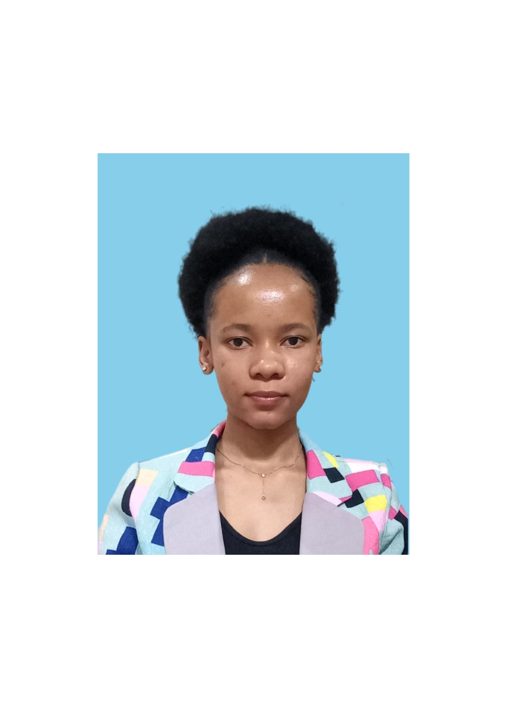

Hello, I'm
|
I don't just write code — I architect solutions. Driven by the belief that technology only matters when it leaves the screen and solves a real-world problem.
I'm a Software Engineer, Data Scientist, and AI Builder based in Dar es Salaam, Tanzania. I hold a BSc. in Computer Science from the University of Dodoma and currently work as a Software Developer at the National Housing Corporation (NHC).
I am deep in the world of scalable automation — building high-logic systems from the ground up, like an end-to-end Django Asset Registry that manages entire hardware lifecycles, and turning "unsolved gaps" into robust, production-ready software.
On the AI side, I'm fascinated by the power of Deep Learning to change lives. From engineering CNN models for brain cancer prediction to building fast, intelligent APIs, I constantly explore how AI can make industries smarter and healthcare more accessible — building toward a future where African tech isn't just following trends, but setting them.

National Housing Corporation (NHC) — Internship · Dar es Salaam, Tanzania
Tanzania Revenue Authority (TRA) — Internship · Arusha, Tanzania
University of Dodoma
AfricAcademy – Arusha Science School · Part-time · Arusha, Tanzania
An AI-powered brain cancer prediction application that analyzes MRI scans using a Convolutional Neural Network (CNN) to detect brain tumors — developed to address Tanzania's critical shortage of radiologists (only 60 for 60M+ people). Achieves 96% classification accuracy with explainable AI for clinical trust.
End-to-end Django asset management system that digitises physical records and manages the full hardware asset lifecycle with a custom approval workflow, automated request tracking, and audit reporting.
Machine learning system for early-stage lung cancer prediction, focusing on data preprocessing, feature engineering, and predictive modelling to assist health diagnostics. Built during UDOM industrial practical training.
AI-powered conversational chatbot built with Flask, providing intelligent context-aware responses through a clean web interface.
Currency exchange management application for tracking and processing foreign exchange transactions with real-time rate management.
University of Dodoma (UDOM)
College of Informatics and Virtual Education. Final year project: NeuroPredict — AI-Powered Brain Cancer Prediction Application.
AfricAcademy – Arusha Science School
Activities: STEM workshops, community outreach, robotics, netball, volleyball.
St. Monica Moshono Girls' Secondary School
General Secretary, Science Lab Assistant, Sports Team Member.
Cybersecurity Essentials
Cisco · Apr 2023
Introduction to Cybersecurity
Cisco · Mar 2023
Artificial Intelligence
ICDL Africa · Oct 2021
Internet of Things
ICDL Africa · Oct 2021
Computer and Online Essentials
ICDL Africa · Jul 2021
Documents
ICDL Africa · Aug 2021
I'm open to opportunities in software development, data science, AI research, and cybersecurity. Whether you have a project in mind, a job opportunity, or just want to connect — my inbox is always open.
Ready to collaborate?
Say Hello